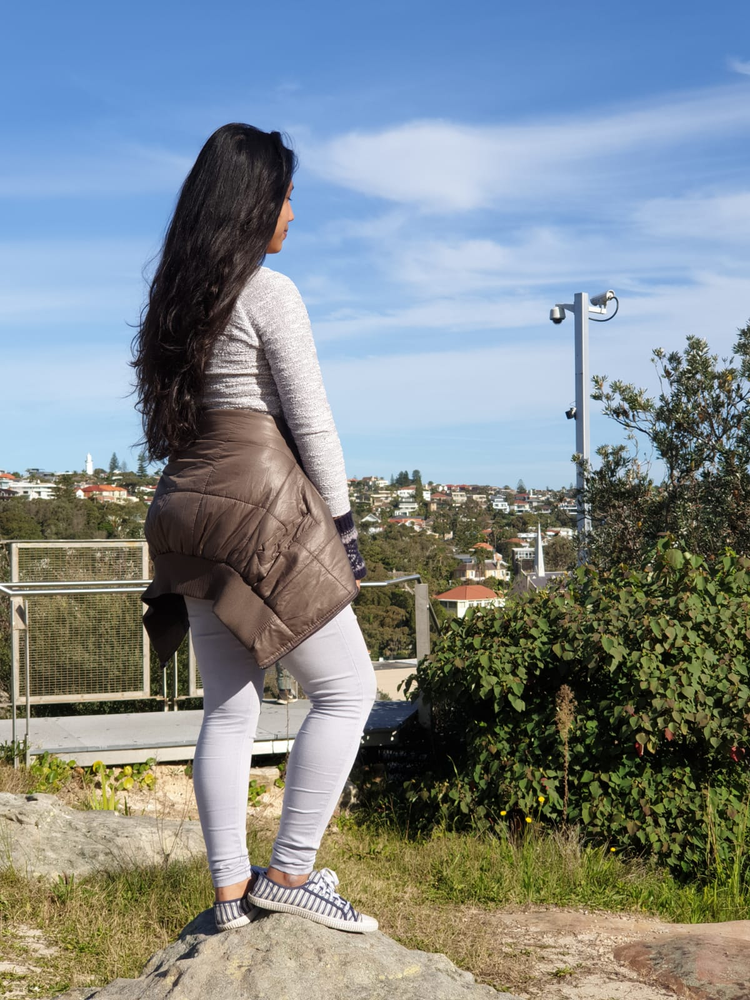

Hi, how are you? how was your day? welcome to my page. My name is shreeya shrestha. I am from Nepal but currently i am persuing bachelor in interactive media in sydney, Australia. I have been here in Australia since 2 years ago. Australia is a unique and diverse country in every way - in culture, population, climate, geography, and history. Culture. Australian culture is as broad and varied as the country's landscape. Australia is multicultural and multiracial and this is reflected in the country's food, lifestyle and cultural practices and experience. Australia has an important heritage from its indigenous people, which plays a defining role in the cultural landscape. This diversity of influences creates a cultural environment in Australia that is lively, energised, innovative and outward looking. i hav e learnt many more from this country from being independent to learning new technologies in my course at wentworth institute.
Its me shreeya:-)
Copyright @2019 All rights reserved | Made by shreeya